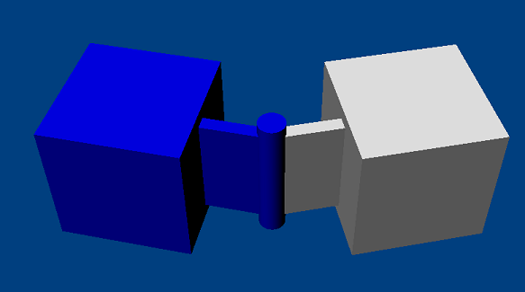
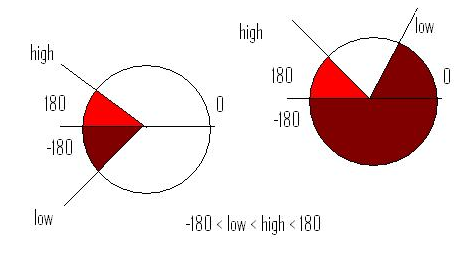

To achieve this configuration, it is necessary to rotate the joint counter-clockwise so that low is below the 180 degree line.


A revolute joint removes all but a single rotational degree of freedom from two objects. The axis along which the two bodies may rotate is specified with a point and a direction vector. In theory, the point along the direction vector does not matter, but in practice, it should be near the area where the bodies are closest to improve simulation stability.
An example for a revolute joint is a door hinge. Another example would be using a revolute joint to attach rotating fan blades to a ceiling. The revolute joint could be motorized, causing the fan to rotate.
DOFs removed: 5
DOFs remaining: 1
|
Parameter |
Description |
| actor[0] | First actor |
| actor[1] | Second actor |
| localAnchor[0] | Point on the axis in the first actor's frame. |
| localAnchor[1] | Point on the axis in the second actor's frame (the points should coincide in the global frame). |
| localAxis[0] | Revolute axis in the first actor's frame. |
| localAxis[1] | Revolute axis in the second actor's frame (should match localAxis[0] in the global frame). |
| Limits: | |
| limit | Defines a lower and upper limit on the angle of rotation for the joint. |
| Springs: | |
| springs | Defines an angular spring which will try and rotate the joint to the springs target value (it is not applied if the joint has a motor). |
| Motor: | |
| motor | Defines an angular motor to apply to the joint. |
| flags: | |
| NX_RJF_LIMIT_ENABLED | true if the limits are enabled |
| NX_RJF_MOTOR_ENABLED | true if the motor is enabled |
| NX_RJF_SPRING_ENABLED | true if the spring is enabled (the spring will only take effect if the motor is disabled) |
NOTE: When setting localAnchor[] it is generally convenient to
use setGlobalAnchor() to set the anchor with a world space point.
NOTE: When setting localAxis[] it is generally convenient to use
setGlobalAxis() to set the axis with a world space axis.
NOTE: When specifying the joint axis it is also important to specify
the localNormal[] which should be orthogonal to the localAxis[]. The
localNormal[] is needed to specify joint limits and
to calculate the joint's angle of rotation.
A revolute joint allows limits to be placed on how far it rotates around the joint axis. For example, a hinge on a door cannot rotate through 360 degrees; rather, it can rotate between 20 degrees and 180 degrees.
The angle of rotation is measured using the joints normal (axis orthogonal to the joints axis). This is the angle reported by NxRevoluteJoint::getAngle(). The limits are specified as a high and low limit, which must satisfy the condition -Pi < low < high <Pi degrees.
Below are valid revolute joint limits in which the joint is able to move between low and high:

NOTE: The white region represents the
allowable rotation for the joint.
As shown below, it is not possible to specify certain limit configurations
without rotating the joint axes, due to the restrictions on the values
of low
and high:
To achieve this configuration, it is necessary to rotate the joint counter-clockwise so that low is below the 180 degree line.
NOTE: If the angular region that is prohibited by the twist limit (as in the above figures) is very small, only a few degrees or so, then the joint may "push through" the limit and out on the other side if the relative angular velocity is large enough in relation to the time step. Care must be taken to make sure the limit is "thick" enough for the typical angular velocities it will be subjected to.
NxRevoluteJointDesc revDesc;
revDesc.actor[0] = actor0;
revDesc.actor[1] = actor1;
revDesc.setGlobalAxis(globalAxis); //The direction of the axis the bodies revolve around.
revDesc.setGlobalAnchor(globalAnchor); //Reference point that the axis passes through.
NxRevoluteJoint *revJoint=(NxRevoluteJoint *)gScene->createJoint(revDesc);